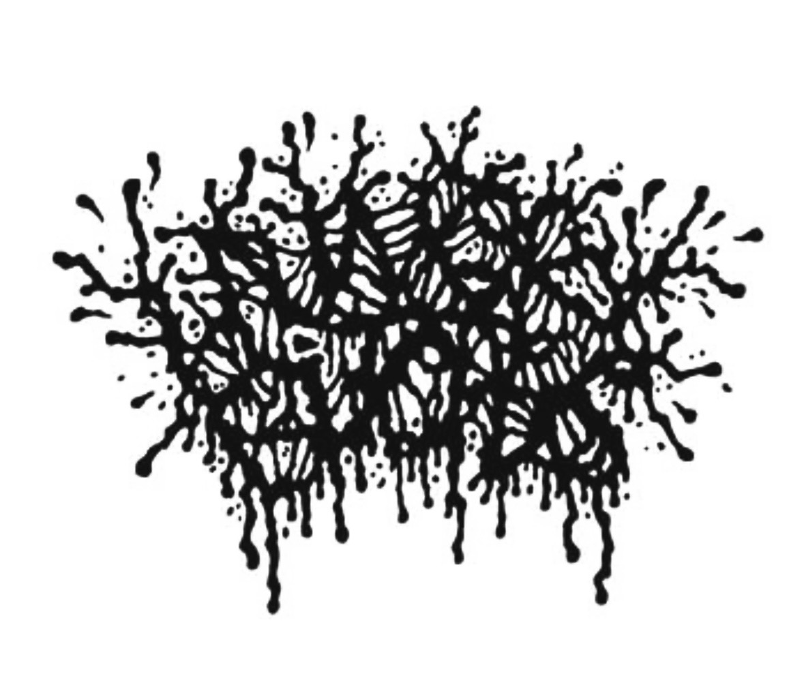

DINNERTIME WITH
We hungry bitches fr fr
GRIN: We’re out here with Hungry Bitches, Karla and Latifah, it’s 5 degrees outside, let’s get started!
First question: goregrind or voregrind?
Latifah: PORNOGRIND
Karla: Yes, pornogrind specifically
Latifah: Or because bandcamp won’t let us say pornogrind, groovy goregrind.
GRIN: What are your thoughts on the gorgrind/mince scene in Chicago, I mean there’s not a lot of pornogrind.
Latifah: So the main reason we started this is because a lot of pornogrind is men being creepy and rapey and we wanted to do this as like lesbian girls to get away from the rapiness of it and instead do a fun thing like girls who are horny about it.
Karla: Yeah, make it fun and try to subvert a lot of the expectations of pornogrind, so like with the samples we use, make them funny and not like heavy and rapey.
GRIN: Balaklava/ski mask bands, thoughts?
Latifah: I mean, obviously we’re all about it, I feel like it's a goregrind staple
Karla: Yeah especially with the pink ski mask, because we’re girls and lesbians
Latifah: Pink ski masks forever!
GRIN: How did Hungry Bitches come to life?
Latifah: I had this idea like over a year ago or whatever. You know how people label the pitch shifted vocals as like puking? You know, puke vocals. I was like, well, there's not many girls who do it. You know, it's mostly dudes who do it. I was like,
well, what if I started a band where there were two girls doing it? And then I thought about the fact of like... two girls... one cup... two girls puking. Yeah, so it was just a fun little idea of like, what if I did a project of two chicks doing puke vocals? And, it was
originally just going to be just a one-off project with sampled drums.. And then we were having so much fun with it. I was like, well, what if we just turn it into a band? And then we turned it into a band and it became so much more fun since we just decided to do that.
Karla: Yeah it was like as soon as we started practicing together as a band, we were like we've got to ditch the drum machine. Like, we're going to do this. We're going to really commit to it.
GRIN: What was your favorite show so far this year?
BOTH: Ooh, that’s tough...
Karla: I'm gonna feel bad because I feel like it might be one of the out of town shows.
Latifah: It's probably the show at the runoff.
Karla: Yeah, the runoff we played with Bubonic Plague, that was out in Kalamazoo. That was a cool little trip and was a lot of fun. We did a little weekender with our friends in Bubonic Plague and the runoff is a really cool venue. For shows I attended?
First that comes to mind is Stabbing, Sanguisugabogg, Putrid Stew up at X-Ray Arcade near Milwaukee.
GRIN: Did you know what Coprophagia meant before using the word in one of your song titles?
Karla: Yes because of the band Devourment. "Postmoral Coprophagia", that song.
GRIN: When writing new songs, are there any lyrics or do you start with gutturals, growls, and samples?
Latifah: No lyrics, just pukes.
Karla: Yeah, just noises.
GRIN: What do your family members think of your music?
Latifah: So my family knows about my bands or whatever. I used to be in a couple of bands that were more listenable for my family, but my family knows that a lot of my music is stuff that they don’t want to listen to. They don’t really care to hear it,
so they don’t really know anything about it.
Karla: Yeah same for me. I've got family members who know I'm in a band and stuff, but I haven't been like "Oh yeah! We're in a Two Girls One Cup pornogrind band!" I kind of like leave those details out.
GRIN: What can we anticipate from Hungry Bitches in 2026?
Latifah: We’ve got some splits in the works with other bands, and I think that’s all we want to say about that. We’re obviously gonna be doing as many shows as we can.
GRIN: Go-to spot to eat in Chicago?
Latifah: I mean straight up this place (Casa Cafe), very very good Mexican food. Also Banh Mi City on 18th is one of my go to spots for sure, they’ve got this seitan banh mi that’s fucking insane.
Karla: Yeah it’s really good. We’re both vegetarians and honestly a place I love and I’m really sad they closed is Fallen Log or Kitchen 17. It’s like the best vegan food I ever had.